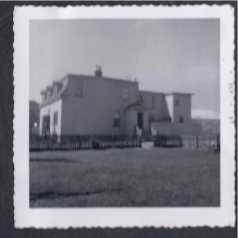

Here's the content box!
The gatepost and the trees are just about all that's left of the world of 106 Pennywell Road where I lived and played. The gatepost still stands, still bears the faint traces of the painted number. The maples are bigger than they were fifty years ago but still recognizable. The two trees nearest the gatepost were the easiest to climb. My friend and I spent many hours sitting in them, nattering away to each other.
The gravel driveway circled the house, a remnant of the house's grander days. Once we had a car we drove in and branched to the right, parking the car in a layby towards the back of the house. There were gates at the front, and behind them, I would sketch a hopscotch grid in the gravel; I became very adroit at singling out my game stone from all the surrounding rocks.
Today it is all gravel where the house stood, and cars and taxis use it as a parking lot.
Past the two comfortable trees, a big grassy yard was fenced in. Three further trees edge Pennywell Road; Linscott Street climbs up the eastern flank of the yard. This yard was called the Green Gate, and we shared it with the family from downstairs, 108. A half-built playhouse stood between two trees; it lacked most of the qualities of playhouses in my books and was just about always damp.
On the eastern side of the Green Gate, along Linscott Street, there was a little plantation of evergreen trees, fenced in with wire. I believe this was some money-making scheme on the part of a member of the school board, but even as a child I could not understand who would buy evergreen trees in Newfoundland. We were not supposed to go in there, but if the little chicken-wire gate stood ajar as sometimes happen, we would sneak inside. It smelled fresh in there, and it was easy to play being in the forest -- but because it was deeply illicit to be there, only one of us at a time ever entered.
Dad built two swings and a seesaw inside the Green Gate, and we all spent hours on the swings in particular. The Green Gate was also home to many of our running games: tag, frozen tag, baseball. The boys played soccer and sometimes ball hockey (though the surface was very unsatisfactory for that). Along the northern fence of this yard, Dad planted a very successful flower border, and spent a lot of time cosseting his flowers. We always knew he was a farmer's son
Next to the Green Gate was a tussocky wilderness known (correctly) as the Thistle Yard. It was swampy, except for a small and lumpy hillock towards the east. It was hard to play any games there; running was difficult and it was indeed full of thistles -- but it served as scenery for the games of cowboys we played alongside. It took little imagination to turn thistles into cacti.
To the north of the Thistle Yard a small slope rose to a little path, with a larger hill rising to the soccer pitch beyond. On this path we galloped endlessly as cowboys. Down the hill we rolled, somersaulted, tobogganed. The car was parked back here and in a deluxe snowstorm it could be completely covered, allowing us the opportunity to dig tunnels through the drifts that piled up against it.
We played in the soccer pitch only occasionally. It was almost too big for us. The field was surrounded by a single-bar fence, however, and we did somersault over and dangle under that fence, the closest we came to any kind of monkey bars. There was a fairly ramshackle grandstand to the north of the soccer pitch and we climbed up and down its steps and seats. I don't remember many organized games there. Steps built into a slope would take us up yet another hill to a second soccer pitch, but we almost never went that far afield. As we got older, we occasionally tobogganed down that second hill; it was bigger than our own little local slope.
To the west of the house lay the "tennis court." In our time, it was utterly dilapidated; a pothole-strewn wreck of old asphalt. In this general area we played
"Old Mother Witch" a running game that we could have played in the Green Gate but never did. For some reason it was also ironclad that if we played our versions of
Grandmother's Footsteps or
Mother May I? or
Simon Says, it was on the tennis court. Perhaps because they were playground games, we chose to play them in the closest thing we had to a playground space. Our cowboy games were media-related, our baseball games conformed to externally set rules, but these games in the tennis court came straight out of children's oral culture. Presumably they were passed on to us by older kids in the neighbourhood; I don't remember (which is probably as it should be!)
To the south of the tennis court, there was a changing house known grandly as the Pavilion, and it had a main floor doorway and a set of external steps up to the second floor (presumably in the cause of segregating the sexes but as I never saw the inside, I do not know). On the bigger flight of stairs we played Shipwreck; the details of this game now completely escape me, nor can I account for its provenance.
Finally, to complete the loop we return to our front door, which stood at the side of the house. A few steps led up to our door and my friend and I would affix one end of a skipping rope to the newel post and take turns skipping. There was a shortage of little girls in our neighbourhood and the boys would not have skipped on any account, so we had to compromise in this way. To the side of our entryway was a separate shed called the oilhouse where our oil was delivered into big tanks, to be carried by hand up the twisting back stairs to fill the insatiable demands of the kitchen stove and the hall heater. At the foot of those stairs was the coal room, and a little oilyard was fenced in, ostensibly to keep children out of all this risky and dirty territory.
My brother and I broke all the rules one day when we were very small and made highly satisfactory mud pies out of the black, oil-soaked dirt of that yard, using oil to mix them instead of trudging all the way upstairs for water as we perfectly well knew we were supposed to do. I remember to this day the luxuriousness of that gushing tap right on hand and the shininess of the mud thus produced. We were probably pretty shiny too, and nemesis was swift and severe once our mother spotted us. We climbed onto the roof of the oilhouse sometimes, but that was mostly just for sitting.
